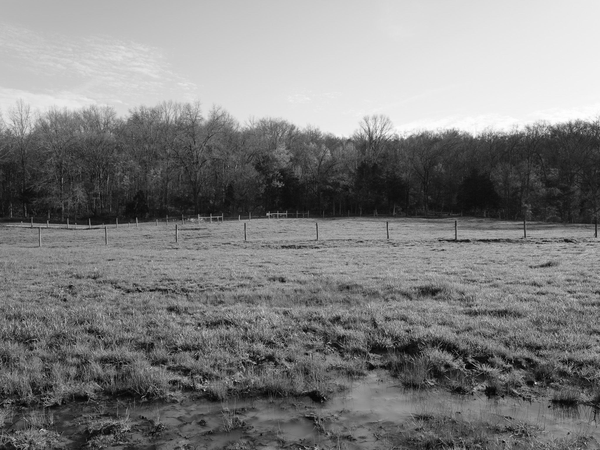
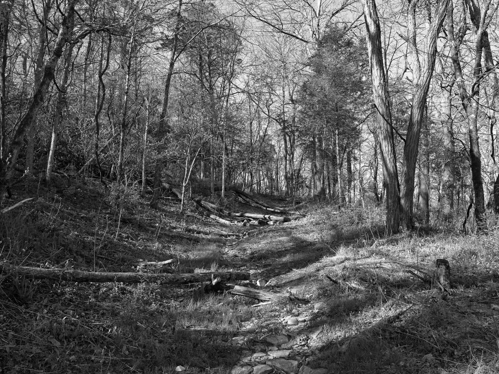

Geological age ~450 Mya Ordovician limestone and shale (Kope Formation); Pleistocene fossil-bearing bog deposits (25,000-12,000 BP)
Epoch Late Ordovician (Cincinnatian Series); late Pleistocene (Wisconsinan Glaciation)
Taxa 223 plants, 36 birds, 120 insects, 7 mammals, 32 fungi, 9 reptiles, 9 amphibians, 13 arachnids
Most observed honey locust (Gleditsia triacanthos) (Delphinium tricorne) (Odocoileus virginianus) (Ageratina altissima) (Campanulastrum americanum)
Native lands Paleoindians from at least ~12,000 BP · Shawnee (Shawanwaki) · Delaware (Lenape); the salt springs drew Indigenous hunters for millennia; Shawnee used the lick as a salt source and hunting ground; Mary Draper Ingles, captured by Shawnee in 1755, was brought to Big Bone Lick and put to work boiling brine; Iroquois Confederacy ceded their Ohio River corridor claim to the British Crown via Treaty of Fort Stanwix 1768, a transaction the Shawnee disputed; Shawnee ceded rights south of the Ohio under duress via Treaty of Camp Charlotte 1774 ending Lord Dunmore's War; Cherokee ceded overlapping claims via Treaty of Sycamore Shoals 1775, a private purchase nullified by Virginia 1778; two prehistoric burial mounds and a cemetery documented by the 1932 Webb-Funkhouser survey; 2008 excavation found possible cut marks on Pleistocene bones suggesting Paleoindian butchering
Displacement & Tenure Kentucky was organized as a Virginia county in 1776 and was never part of the federal public domain; no federal Royce cession applies; Iroquois Confederacy ceded British Crown claim to lands south of the Ohio via Treaty of Fort Stanwix (1768), disputed by the Shawnee; Shawnee ceded rights south of the Ohio via Treaty of Camp Charlotte (1774); Cherokee claim extinguished via Treaty of Sycamore Shoals (1775), voided by Virginia 1778; Kentucky distributed as Virginia military bounty land grants prior to statehood 1792; the Big Bone Lick Historical Association purchased 16.66 acres and deeded them to the Kentucky State Commissioner for conservation, with the park formally established July 2, 1960.
Shadow History Big Bone Lick has been systematically stripped of paleontological material for nearly 300 years. In 1739, French-Canadian military commander Charles Le Moyne de Longueuil collected a tusk, femur, and molars and shipped them to Paris, where they entered Louis XV's Cabinet du Roi under Buffon's direction, initiating the first scientific attention to North American Pleistocene megafauna. In 1765-66, British Indian agent George Croghan extracted specimens on two expeditions; one collection was seized during an attack; the second was presented by Benjamin Franklin to the Royal Society of London. By the late 18th century, hundreds and possibly thousands of bones had been removed by collectors. President Thomas Jefferson, fixated on the site as a rebuttal to Buffon's theory of American animal degeneracy, dispatched Meriwether Lewis in October 1803 to collect specimens; those bones were loaded onto a keelboat and shipped south from Fort Mandan in spring 1804 and the boat sank near Natchez, Mississippi, losing the entire collection. Jefferson then commissioned William Clark, who conducted a three-week excavation in fall 1807 with a ten-man crew, removing over 300 bones and teeth; Jefferson divided the collection among the Paris Museum of Natural History, the American Philosophical Society, and Monticello, where specimens were displayed in the Entrance Hall. Clark's 11-page description allowed naturalists to distinguish mammoths from mastodons for the first time, making this the first funded paleontological field excavation in North America. In 1962-67, University of Nebraska paleontologists recovered over 2,000 specimens now held at the University of Nebraska State Museum; four species were formally named from Big Bone Lick material. James Colquohoun operated a salt works at the site from approximately 1795 until 1812; Kentucky salt works of the era routinely used enslaved labor, and the 1800 Boone County census recorded 325 enslaved persons (21% of the county population), though direct documentary evidence tying enslaved workers to Colquohoun's operation has not yet been confirmed in available records. The Clay House hotel opened at Big Bone Lick in 1815 and operated until approximately 1845, serving planter families including the Clays and Breckinridges for mineral spring bathing; enslaved domestic service workers almost certainly staffed the operation, but no named records have been located.
Ecology Mixed mesophytic forest with oak-hickory overstory on surrounding uplands; active sulphur spring and mineralized salt lick complex creating a distinctive halophytic microhabitat; native grassland and savanna remnants along Discovery Trail; wetland and bog habitat in the spring-fed lowland supports running buffalo clover (Trifolium stoloniferum, delisted 2021) and rare bats.
Hydrology Big Bone Creek drainage, a tributary of the Ohio River; sulphur-bearing mineral springs emerge from the Ordovician bedrock and discharge into the creek floodplain, forming the historic salt lick; Pleistocene fossil record owes its preservation to glacial meltwater drainage from the Laurentide ice sheet during the Wisconsinan Glaciation, which created standing-water conditions that trapped megafauna; Ohio River basin.
Acreage 525
GPS 38.8838° N, 84.7474° W
Big Bone Lick State Historic Site I · 2026-04-08
_DSF1203.jpg

Big Bone Lick State Historic Site II · 2026-04-08
_DSF1205.jpg

Big Bone Lick State Historic Site III · 2026-04-08
_DSF1215.jpg
Big Bone Lick State Historic Site IV · 2026-04-08
_DSF1223.jpg
Big Bone Lick State Historic Site V · 2026-04-08
_DSF1228.jpg
Big Bone Lick State Historic Site VI · 2026-04-08
_DSF1229.jpg
Dinsmore Woods State Nature Preserve →
Public Lands Institute — ongoing project
CC0 Public Domain